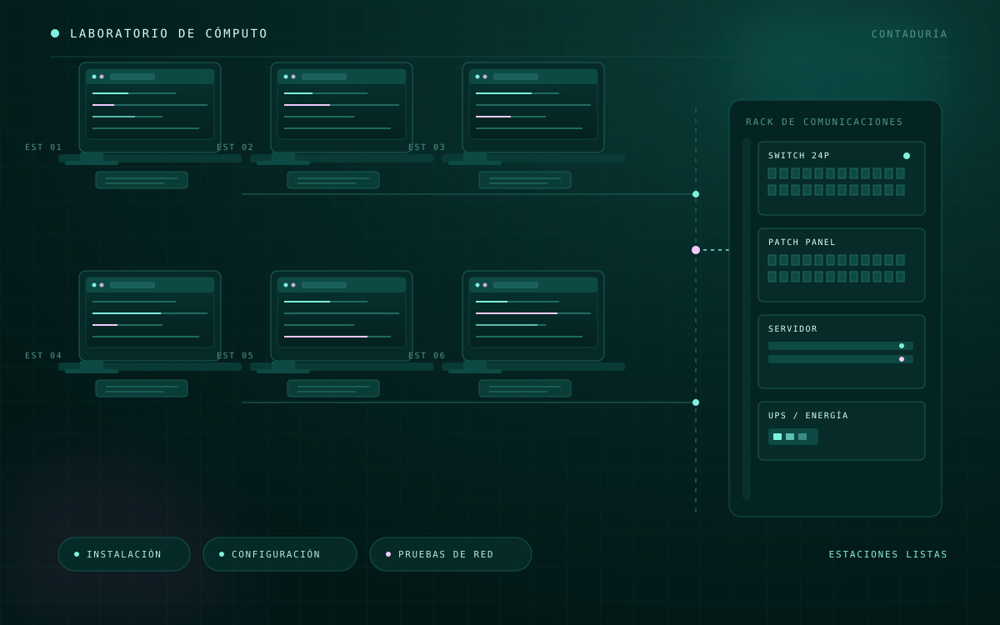

Instalación y configuración de computadoras para un laboratorio de Contaduría, incluyendo la conexión y organización del cableado de red, así como la preparación de los equipos para su uso académico.
El trabajo abarcó el montaje físico de las estaciones, la configuración del sistema operativo y del software requerido, la conexión de cada equipo a la red y la organización del cableado para mantener un espacio de trabajo funcional y ordenado.
Se realizaron pruebas de conectividad y funcionamiento por estación, además del etiquetado de equipos y la documentación de la configuración para facilitar el mantenimiento y la administración del laboratorio.
